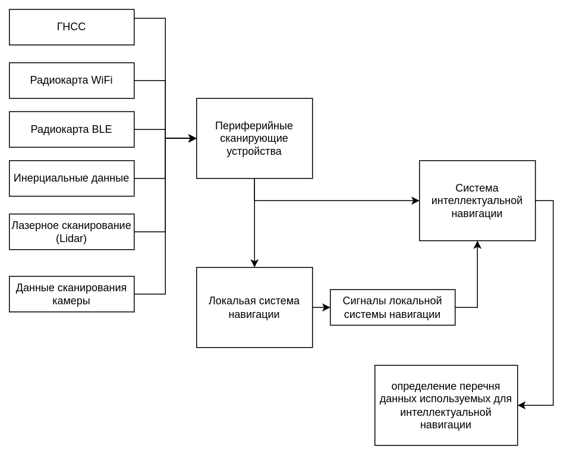

про архитектуру - хочу дальше описать схемки которые нарисовал уже \
написать про железо платформы - камеры, технологию сбора данных, про сами карты, масштабирование системы \
обоснование по алгоритмам и производительности закончил почти, осталось реальные бенчмарки подставитькамеры, технология сбора данных, про сами карты, масштабирование системы
архитектура интеллектуальной платформы навигации

Система интеллектуальной навигации включает в себя несколько независимых модулей вычисления координаты пользователя.
Для работы системы в условиях недостаточной или шумной информации из определенных источников, интеллектуальная система навигации проектируется с возможностью максимального совместного исполльзования независимых источников информации.
В зависимости от задачи и платформы варьруется набор доступных датчиков и производительность основного вычислительного модуля.
Исходим из принципа увеличения качества информации в системе. Маскимальная точность алгоритма навигации будет при наличии всех возможных данных для каждой конкретной платформы в системе. При этом реализация всегда ограничена конкретной платформой.
Например для смартфона невозможно использование специальных графических ускорителей, следовательно алгоритм должен выполняться на оригинальном процессоре.
При сборе данных необходимо учитывать ограничения на сетевую пропускную способность системы.
Например
| Название стандарта видео | Разрешение | Размер часа видео |
|---|---|---|
| 720p | 1280 x 720 | 800 – 900MB |
| 1080p | 1920 x 1080 | 1.2 – 1.4GB |
| 2K | 2048 x 1080 | 2.8 – 3GB |
| 4K | 3840 x 2160 | 20 – 22GB |
Рассчитаем размер карты для одной локации:
Длина маршрута для покрытия площади:
$$
\begin{align}
l_{side} = \sqrt{s_{area}} \\
n_{routes} = l_{side} / d_{discretisation} \\
l_{cover} = l_{side} \cdot n_{routes} \cdot n_{repeates} \\
size_{all video} = l_{cover} / \frac{[v_{avg}]{m/s}}{60} \cdot [\rho] {Gb / min} \\
= \frac{s_{area}[m^2] \cdot n_{repeates}[{\frac{1}{m}}]}{d_{discretisation}[{m}]} / \frac{v_{avg}[{m/s}]}{60} \cdot \rho [{Gb / min}]
\end{align}
$$
$$
l_{side} = \sqrt{s_{area}} \\
n_{routes} = l_{side} / d_{discretisation} \\
l_{cover} = l_{side} \cdot n_{routes} \cdot n_{repeates} \\
size_{all video} = l_{cover} / \frac{[v_{avg}]{m/s}}{60} \cdot [\rho] {Gb / min} \\
= \frac{s_{area}[m^2] \cdot n_{repeates}[{\frac{1}{m}}]}{d_{discretisation}[{m}]} / \frac{v_{avg}[{m/s}]}{60} \cdot \rho [{Gb / min}]
$$
a^2+b^2=c^2Для локации прямоугольной площади размером sarea = 2000m2 длиной стороны $\sqrt{s_{area}} = 45 m$, если делать обходы локации вдоль линий каждые discretisation = 10m Получится определенная длина маршрута.
Поскольку съемка может вестись с разных стророн и для валидации решения необходимо оказаться в одной и той же локации несколько раз, записываем этот маршрут nrepeates = 2.5 раз. Считаем среднюю скорость движения пешехода / записывающей платформы равной 3 м/с.
Если записывается только видео качества freq = 1080p, то итоговый размер файла ориентировочно равен:
$ $
Итоговый размер файла в 4 Гб - один запуск для одного пользователя. Количество информации в минуту для одного пользователя -
$ $